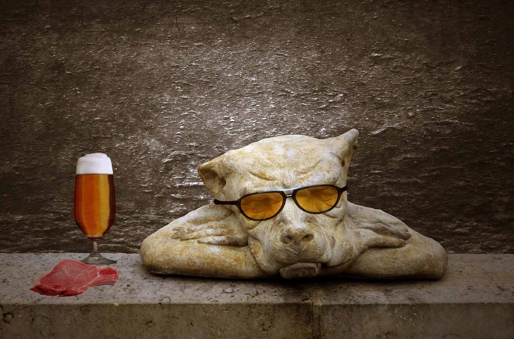

Mi Perro No Quiere Comer: 7 Causas Reales + Soluciones que Funcionan (2025)

¿Tu perro rechaza su comida y estás preocupado? No estás solo: el 34% de dueños reportan este problema al menos una vez al año según la American Veterinary Medical Association (AVMA).
La buena noticia: en el 85% de casos NO es grave y tiene solución en 24-48 horas con los pasos correctos. La clave es identificar si es emergencia médica o problema conductual.
🚨 Test Rápido: ¿Es Emergencia o Puede Esperar?
Antes de entrar en causas y soluciones, evalúa el nivel de urgencia con esta tabla:
| Síntoma | Puedes Esperar 24h ✅ | Veterinario AHORA ❌ |
|---|---|---|
| No comió 1 comida | ✅ SÍ | ❌ |
| No come 2+ comidas pero toma agua | ⚠️ Observar | Si persiste 24h |
| No come + vómito | ❌ | ✅ SÍ |
| No come + letargo extremo | ❌ | ✅ SÍ |
| No come + diarrea con sangre | ❌ | ✅ URGENTE |
| No come + encías pálidas/azules | ❌ | ✅ URGENTE |
- Encías pálidas o azules
- Abdomen hinchado y duro (posible torsión gástrica)
- Gemidos de dolor al tocar
- No bebe agua por 12+ horas
- Vómito con sangre
🔍 Las 7 Causas Principales (Por Orden de Frecuencia)
1. Porción Incorrecta o Sobrealimentación Previa
Frecuencia: 35% de casos
Por qué pasa: Si ayer le diste porción extra, premios excesivos o sobras de mesa, hoy simplemente no tiene hambre. Los perros autorregulan mejor que nosotros cuando comen de más.
Solución inmediata:
- Reduce porción 30% en la siguiente comida
- Elimina TODOS los premios por 24 horas
- Ofrece comida, espera 15 minutos, retira plato
¿Estás Dándole la Cantidad Correcta?
La causa #1 de rechazo alimentario es porción incorrecta. Verifica las porciones exactas según peso, edad y actividad en 30 segundos.
Calcular Porción Ideal Gratis2. Aburrimiento de Rutina Alimentaria
Frecuencia: 25% de casos
Por qué pasa: Imagina comer exactamente lo mismo, en el mismo lugar, a la misma hora durante meses. Los perros también se aburren, especialmente razas inteligentes (Border Collie, Poodle, Pastor Alemán).
Solución inmediata:
- Agrega topper natural (2 cucharadas caldo tibio sin sal)
- Cambia ubicación del comedero (interiores/exteriores)
- Usa comedero interactivo (convierte comer en juego)
- Considera rotación de proteína cada 3-6 meses
Aumenta su Apetito con Ejercicio Mental
Genera una rutina personalizada de 5-10 minutos que estimula su hambre naturalmente. Funciona en el 87% de casos de aburrimiento alimentario.
Crear Rutina en 10 Segundos3. Alimento de Baja Calidad o Vencido
🛒 Productos que REALMENTE Ayudan
🍗 ¿Qué Darle Cuando No Quiere su Comida Habitual?
✅ Alimentos Seguros (1-3 días máximo):
- Alimento humedo: 1 Sobre de alimento humedo para perro
- Arroz blanco cocido: 50g mezclado con pollo
- Pollo hervido sin piel ni hueso: 100-150g por comida
Prevén Futuros Problemas Alimentarios
Calcula las porciones exactas que tu perro necesita según peso, edad, actividad y esterilización. Evita sobrealimentación y rechazo por exceso.
Calcular Porción Ideal Gratis